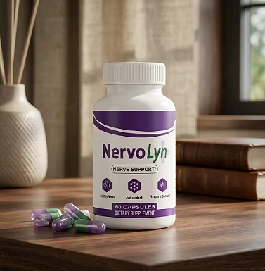
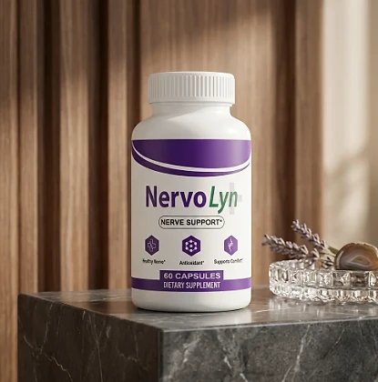
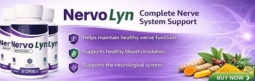

What Is Nervolyn And How Does It Work?
Nervolyn is a dietary supplement in capsule form designed to support healthy nerve function, circulation to the hands and feet, and everyday comfort for adults who want to address the tingling, numbness, unsteady footing, and restless nights that can build up with age through a natural, dependable approach — without complicated routines or temporary quick fixes.
It utilizes a simple daily capsule that combines Magnesium Glycinate with a 575 mg proprietary blend of Alpha Lipoic Acid, Butcher's Broom, L-Carnitine, Turmeric, and Coenzyme Q10 to support healthy nerve signaling, steady circulation, and cellular energy, helping the body maintain its natural balance throughout the day.
According to the official website, these nutrients were selected for their role in healthy nerve signaling, circulation, and cellular energy, and work together to calm nerve discomfort, support blood flow to the hands and feet, and protect nerve cells from oxidative stress, particularly for people who prefer one capsule a day over multiple products.
Rather than acting as a short-lived artificial fix, Nervolyn focuses on a whole-formula approach, working gradually alongside daily routines to help maintain comfortable sensation, steady balance, and long-term nerve wellness.
With consistent daily use, the formula is intended to support warmer, steadier hands and feet, more confident footing, and more restful nights. The official website notes that support builds over time and recommends 90 to 180 days of consistent use.
From a practical standpoint, Nervolyn is a daily nerve support capsule designed to fit into an ordinary routine, with no powders to mix and nothing to measure.
The official website describes the formula as 100% natural and non-GMO and says it is manufactured in the USA, in Aurora, Colorado, in a GMP-certified facility. It is a dietary supplement, not a treatment for neuropathy or any diagnosed nerve condition.
Nervolyn Ingredients
Every capsule of Nervolyn contains 80 mg of Magnesium Glycinate and a 575 mg proprietary blend of five nutrients, according to the official website. The blend's total is disclosed, but not the amount of each ingredient:
Magnesium Glycinate (80 mg, 19% DV): A highly absorbable form of magnesium, essential for healthy nerve transmission and muscle relaxation.
Alpha Lipoic Acid: One of the most researched antioxidants for nerve health, included to help neutralize oxidative stress in nerve tissue.
Butcher's Broom (Ruscus aculeatus) root extract: Used in European herbal tradition to support healthy blood vessel tone and circulation.
L-Carnitine: An amino acid compound that supports energy production inside cells, including nerve cells.
Turmeric (Curcuma longa) rhizome extract, 95% curcuminoids: Standardized for potency to support the body's normal inflammatory response.
Coenzyme Q10 (as ubiquinone): An antioxidant found in every cell that supports cellular energy and protects cells from oxidative damage.
Together, these nutrients are designed to support nerve comfort, circulation, and cellular energy from within. The official website describes them as 100% natural, non-GMO ingredients sourced for purity.
Nervolyn is designed for daily use, offering a natural, non-prescription approach to supporting nerve health, without complicated routines or harsh synthetic compounds.
Nervolyn Side Effects
Nervolyn is generally considered well tolerated and is designed for adults of different ages who are looking for a natural, balanced approach to nerve and circulation support, especially those who prefer an easy one-capsule daily routine to support comfort, balance, and restful sleep without resorting to harsh solutions.
According to the official website, the formula is 100% natural and non-GMO and is manufactured in the USA in a GMP-certified facility in Aurora, Colorado, reinforcing consistency, safety, and reliability.
With no widespread reports of serious side effects, Nervolyn is generally considered a well-tolerated option. Still, some ingredients deserve attention: Alpha Lipoic Acid may lower blood sugar, Turmeric and Butcher's Broom may interact with blood thinners or blood pressure medication, and magnesium can cause mild digestive upset in sensitive people. The official FAQ recommends talking to your doctor first, especially if you take medication for diabetes, blood pressure, or blood thinners. It is not intended to diagnose, treat, cure, or prevent any disease, and individual results may vary.
The official FAQ also makes clear that Nervolyn does not treat neuropathy or any diagnosed nerve condition. Anyone who has been diagnosed should keep working with their physician, and pregnant or nursing women and anyone with a medical condition should consult a healthcare professional before using it.
Nervolyn Dosage
The recommended Nervolyn dosage is one capsule a day, according to the official FAQ, and it is designed to fit easily into a daily routine, making consistency simple and convenient. As an easy daily capsule, it requires no powders to mix, no drinks to prepare, and nothing to measure.
The official website recommends not skipping days, because the benefits of Magnesium Glycinate, Alpha Lipoic Acid, and Butcher's Broom accumulate with daily use. Taking it at the same time each day, with a glass of water, makes the routine easy to remember.
For best results, consistency is key. The official order page lists each bottle as a 30-day supply, and the website suggests completing at least a 90-day routine before evaluating results, with fuller support building over 90 to 180 days of daily use.
There is no need for complex schedules or multi-step routines. One capsule a day is designed to build lasting support gradually alongside regular movement, good sleep, a balanced diet, and proper hydration. Keep the bottle closed, in a cool, dry place, and out of the reach of children.
As with any dietary supplement, it's important not to exceed the recommended dose and to check the label on your bottle. Nervolyn works best when used regularly, combined with healthy daily habits and the guidance of your healthcare professional.
Nervolyn – Refund Policy
You can order Nervolyn with confidence, knowing that every purchase is protected by a 60-day, 100% money-back guarantee. This allows you to try the formula and decide if it delivers the support you expect.
According to the refund policy on the official website, if for any reason you are dissatisfied during the first 60 days after your purchase, you can contact customer support to request a refund. The policy asks customers not to ship products back before contacting support, and says unused or empty bottles go back to the address provided, with return shipping paid by the customer. The FAQ on the sales page is more generous and says the bottles do not need to be returned, so confirm the steps with support.
How the refund process works: Email support to request your return; email is the fastest option. The team replies with the authorized warehouse address and the shipping instructions. Once the refund is processed, you receive an email confirming that it is complete.
Customer Support Contact Information: support@nervolyn.com, as listed on the official website, which also lists phone support from 7AM to 9PM, 7 days a week (+1 720 513 2923 on the refund page and +1 (720) 619-8477 on the contact page).
Refund Processing Time: According to the policy, refunds take 5 to 7 business days to appear on a credit card and 5 to 10 business days on a debit card, depending on your bank.
This refund policy is designed to give customers a clear and transparent experience when trying Nervolyn, with support available every day of the week.
Nervolyn Customer Reviews
-
Robert H. — Phoenix, AZVerified Purchase – 6 Bottles
“The tingling in my feet had gotten so bad I could barely enjoy an evening walk with my wife. I started Nervolyn about two months ago. By week four I noticed my feet felt warmer and steadier. Now I’m back out in the garden every morning and we walk two miles most nights without me stopping to ‘shake it off.’ Genuinely life-changing.”
-
David M. — Chicago, ILVerified Purchase – 3 Bottles
“Numbness in my fingers was making it hard to type at work and honestly embarrassing when I couldn’t button my own shirt cuffs. A coworker recommended Nervolyn. About six weeks in, I noticed I could feel my keyboard again, and buttoning shirts stopped being a two-handed struggle. Small thing, but it means everything day to day.”
-
Walter B. — Atlanta, GAVerified Purchase – 3 Bottles
“I was getting unsteady on my feet, especially going down stairs, and I stopped trusting my own balance around my grandkids. My daughter bought me a 3-bottle kit for my birthday. Six weeks in, I feel planted again — I even got back on the ladder to clean the gutters, which my wife wasn’t thrilled about, but it says a lot about how I feel now.”
Nervolyn – Where To Buy
Nervolyn is sold through its official website, so if you decide to try it, it's important to be careful about where you purchase it. The official website is the only sales channel the manufacturer lists, and it does not point to marketplaces such as Amazon, eBay, or Walmart.
Listings on third-party platforms may look similar but cannot be verified as authentic, raising concerns about safety, quality, and ingredient freshness. Products purchased outside the official source may not be covered by the 60-day guarantee.
For this reason, it makes sense to purchase Nervolyn only through the official website. Buying directly from the official source ensures you receive the authentic original product, with access to customer support and the full guarantee. According to the official FAQ, every purchase is a one-time payment, with no auto-ship, recurring charges, or hidden fees.
To avoid counterfeit batches and ensure maximum quality, always verify that you are ordering from the official Nervolyn website before completing your purchase.
To ensure you’re getting the authentic product, most users choose to visit the official website.
Is Nervolyn A Scam?
Based on what the official website discloses, Nervolyn does not appear to be a scam. It is a real capsule supplement, sold through an established retailer (BuyGoods), and formulated to support healthy nerve function and circulation as part of a consistent routine.
The ingredients used in Nervolyn — Magnesium Glycinate, Alpha Lipoic Acid, Butcher's Broom, L-Carnitine, Turmeric, and Coenzyme Q10 — are well known in the nerve support field. The official website discloses the magnesium dose and the total of the proprietary blend, although not the amount of each blend ingredient.
The official website also says Nervolyn is manufactured in the USA, in a GMP-certified facility in Aurora, Colorado, lists a support email and phone line open every day, and states that every order is a one-time purchase with no subscriptions or auto-billing, with a focus on transparency and customer support.
The customers quoted on the official website describe warmer, steadier feet, feeling their fingertips again, and more confident balance, and the formula offers an easy daily habit, making Nervolyn a practical option for those seeking natural nerve support. Results vary from person to person, and no supplement replaces medical care or prescribed treatment.
Nervolyn is backed by a 60-day, 100% money-back guarantee, and the refund steps and processing times are published on the official website, which underscores the company's transparency with customers.
If you're looking for a simple daily capsule to support nerve comfort and healthy circulation without complicated routines, Nervolyn is worth considering — especially when purchased directly from the official website.
For those who want to verify product details or check current availability, the official Nervolyn website remains the safest option.

Check Availability On Official Website
